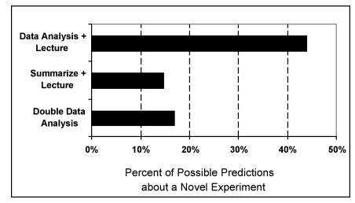

Double-Flipped Classrooms and Online Learning Tools
Jay Pfaffman
pfaffman@southalabama.edu
The Flipped Classroom Hope
The Standard Classroom
- Read a textbook
- Do something in class
The Flipped Classroom Cynic
- Watch a video
- Do something in class
The Teachable Moment

Preparation for Future Learning (PFL)
- Do an exploration activity
- Get an "Aha!" lecture
PFL Stats
Come up with a way to calculate a number that describes each of these data sets.
- 1 2 3 4 5 6 7 8 9
- 4 5 6 4 5 6 4 5 6
- 1 1 1 1 5 9 9 9 9
PFL Psychology
Six hear these words, spoken 1 second apart.
car, sky, apple, book, cup, lock, coat, light, bush, iron, water, house, tape, file, glass, dog, cloud, hand, chair, bag
- bag, hand, chair, cloud, sky, light
- bag, chair, hand, car, sky, book, house, bush
- hand, bag, chair, cloud, car, lock, dog
- bag, hand, chair, dog, car, apple, sky, water, glass
- bag, chair, car, iron, apple, cup, water, light
PFL Treatment
- Analyze, lecture
- Summarize, lecture
- analyze, analyze
PFL Results

PFL Resources
Efficiency and Innovation in Transfer from http://aaalab.stanford.edu/
South Alabama Masters in Educational Media and Technology
Designed for teacher technology leaders
- Building-level technology coordinators
- Teachers who want to use technology
Courses
- EDM 510 Microcomputing Systems in Education
- EDM 520 Computer Applications In Education
- EDM 580 Information Literacy
- EDM 584 Educational Technology Lab
- EDM 590 Special Topics
- EDM 591 Trends and Issues in Educational Media
- ISD 581 Hypermedia Tools
- EPY 502 Psychology of Learning and Learners
Problem-based Instruction
- Solving Problems rather than following directions
Thanks
Jay Pfaffman <pfaffman@southalabama.edu>